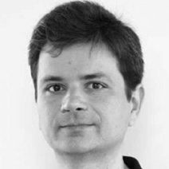

People
ELLIS Members
Alexandre Bernardino is an Associate Professor at IST and a senior researcher at ISR-Lisboa (the Institute for Systems and Robotics of IST), a member of LARSyS (Laboratory of Robotics, Systems of Engineering and Science), and the co-director of VisLab, the Computer and Robot Vision Laboratory. His main research interests focus on the application of computer vision, cognitive science, control theory and machine learning to advanced robotic and surveillance systems. He has published on topics such as foveal sensors, visual attention and stereo, image feature extraction, binocular head control, image based tracking and identification, learning object affordances, sensorimotor coordination, and human activity recognition, among other topics.
Ana Paiva is a Professor at IST and coordinates the Group on AI for People and Society at INESC-ID, which investigates agent-based complex systems, social agents, and robots. Her research focuses on creating social agents that can simulate human-like behaviors, be transparent, natural, eventually giving the illusion of life. She has addressed this goal by engineering agents that exhibit social capabilities, including emotions, personality, culture, non-verbal behavior, empathy, learning, collaboration. Her main contributions have been in embodied conversational agents, multi-agent systems, affective computing, social robotics. She coordinated the participation of INESC-ID in 15 European projects and was PI of several ones. She has received many best paper awards, including the first prize of the Blue Sky Awards sponsored by the Computing Community Consortium at AAAI 2018. She has served on the Global Agenda Council in AI and Robotics of the World Economic Forum (2014--16) and on the Scientific Advisory Board of Science Europe (2016--18).
André Martins is an Associate Professor at IST, a researcher at IT, and the VP of AI Research at Unbabel. He received a dual-degree PhD (2012) in Language Technologies from Carnegie Mellon University and IST. His PhD thesis received an Honorable Mention in CMU's SCS Dissertation Award and the Portuguese IBM Scientific Prize. His research interests include natural language processing (NLP), ML, structured prediction, and sparse modeling, in particular the use of sparse attention mechanisms to induce interpretability in deep learning systems. He co-founded and co-organizes the Lisbon Machine Learning School (LxMLS 2011--2019). He received a best paper award at ACL 2009 and a best system demonstration paper award at ACL 2019. A. Martins recently won an ERC starting grant for his DeepSPIN project (2018-22), whose goal is to develop new deep learning models and algorithms for structured prediction, for NLP applications.
Isabel Trancoso is a Professor at IST and currently President of the Scientific Council of INESC-ID. She has PhD (1987) and Agregado (2002) degrees in Electrical and Computer Engineering from IST. She works in spoken language processing. She was Editor-in-Chief of the IEEE Transactions on Speech and Audio Processing, Member-at-Large of the IEEE Signal Processing Society (SPS) Board of Governors, and President of the International Speech Communication Association (ISCA). She chairs both the ISCA Fellow Selection Committee, and the Fellow Evaluation Committee of the IEEE-SPS. She received the 2009 IEEE-SPS Meritorious Service Award, became an IEEE Fellow (2011) and ISCA Fellow (2014).
Manuel Lopes is an Associate Professor at IST. He received a PhD in Electrical and Computer Engineering from IST in the field of machine learning and intelligent machines. He was a researcher at VTT Finland, a lecturer at Plymouth University, and a researcher at INRIA France, and is an ELLIS member. Manuel's research interests lie in the application of machine learning methods for problems in computational biology, robotics, sensing technologies, human-machine collaboration and data analysis. He teaches courses on AI, ML, and robotics. He published more than 50 papers in international journals and conferences in the domains of data science, ML, robotics and computational biology. He has coordinated projects at the European and national level in the fields of intelligent machines, human-machine collaboration and computational modeling.
Mário Figueiredo received PhD (1994) and habilitation (2004) degrees in Electrical and Computer Engineering from IST. He is IST Distinguished Professor and holds the Feedzai Chair on Machine Learning. He is also group leader and area coordinator at Instituto de Telecomunicações (IT). M. Figueiredo is IEEE Fellow and IAPR Fellow, member of the Portuguese Academy of Engineering, and was included (2014--18) in the Highly Cited Researchers list (Clarivate Analytics). He received several awards, namely the 2011 IEEE Signal Processing Society Best Paper Award, the 2014 IEEE Baker Award, the 2016 EURASIP Individual Technical Achievement Award, the 2016 IAPR Pierre Devijver Award. His research interests are in machine learning, signal processing, and optimization. He co-founded and co-organizes the Lisbon Machine Learning Schools (LxMLS 2011--2019).
Rodrigo Rodrigues is a Professor at IST and a researcher at INESC-ID. Previously, he was faculty member at the Nova University of Lisbon, and prior to that at the Max Planck Institute for Software Systems (MPI-SWS), where he led the Dependable Systems Group. He received his PhD degree from MIT in 2005, supervised by Barbara Liskov. He has won several fellowships and awards, including a best paper award at the Symposium on Operating Systems Principles, the flagship conference in computer systems, a special recognition award from MIT's Department of Electrical Engineering and Computer Science, an ERC starting grant, and a Google faculty research award. In recent years, he and his PhD students have published in the top conferences of several areas, including OSDI, VLDB, USENIX Security, ASPLOS, EuroSys, NSDI, WWW, FAST, and PODC.
Other Faculty Members
Alberto Abad is an Assistant Professor at IST and currently the coordinator of the Human Language Technologies laboratory of INESC-ID. He received the Telecommunication Engineering (2002) and the Ph.D. degrees (2007) from the Technical University of Catalonia, Spain. His research interests include robust speech recognition, speaker and language characterization, applied machine learning, health-care applications, and privacy-preserving speech processing and machine learning. He is also an IEEE Senior member, an ACM member, an ISCA member, and Associated Editor for the IEEE/ACM Transactions on Audio, Speech and Language Processing journal.
Alexandra Carvalho is an Assistant Professor in Electrical and Computer Engineering at IST and a researcher at IT. She received a degree in Applied Mathematics from IST in 1998. After several years in industry as a software engineer, she returned to IST, concluding a PhD in Computer Science, in 2011. From then on, she participated in more than 15 national and European projects in the area of bioinformatics and ML. Her main research interests include probabilistic graphical models and information theory.
Arlindo Oliveira is a Professor and was the president of IST until December 2019. Previously, he was the president of INESC-ID and chair of the Department of Computer Science and Engineering of IST. Between 2015 and 2018, he was the head of the Portuguese node of ELIXIR (European ESFRI infrastructure for computational biology). He obtained his BSC and MSc degrees from IST and his PhD (1994) from the University of California, Berkeley, in Electrical Engineering and Computer Science. He was the head (2002--12) of the Knowledge Discovery and Bioinformatics group of INESC-ID, and supervised 12 PhD students in the fields of algorithms, ML, bioinformatics, and computer architecture. He authored more than 150 articles and 3 books translated in several languages. He is a member of the Portuguese Academy of Engineering and a senior member of IEEE.
Bruno Martins received his PhD in 2009 from the Faculty of Sciences of the University of Lisbon. He is currently an Associate Professor at Instututo Superior Técnico of the University of Lisbon, and a researcher at the Human Language Technologies Lab of INESC-ID. His work focuses on the areas of information retrieval, text mining, and the geographical information sciences. He has been involved in several research projects related to geographical text analysis and geospatial information access/retrieval, often at the intersection of AI/ML and other disciplines (e.g., projects related to emerging fields such as geospatial AI, or in application areas such as the digital humanities and computational social sciences).
Francisco Melo is an Associate Professor at IST and a Senior Researcher at INESC-ID. He completed his PhD in Electrical and Computer Engineering in 2007, investigating reinforcement learning (RL) in multi-robot navigation problems. After his PhD, he held positions at the Computer Vision Lab of ISR-Lisboa (2007) and the Computer Science Department of CMU (2008--09). His research is on decision making, ML, RL, and planning under uncertainty, multiagent and multi-robot systems, with applications in robotics and human-robot interaction. He teaches courses on planning under uncertainty and RL. He has participated (as both researcher and PI) in several national and European projects on human-robot interaction.
Francisco Santos is a Professor at IST and senior researcher at INESC-ID. He has a PhD in Computer Science from the Université Libre de Bruxelles, as a Marie Curie Fellow at the Institut de Recherches Interdisciplinaires et Intelligence Artificielle (IRIDIA, 2007), and was Chargé de Recherches at the Machine Learning Group of ULB. He is interested in using AI tools to understand collective dynamics in social and life sciences. He has been working on algorithms for population dynamics, complex networks, cooperation dynamics, urban growth, climate agreements, the impact of AI on human decision-making. His work has appeared in Nature, PNAS, AAAI, IJCAI, AAMAS. He received the 2016 CDG-ULisbon prize, and the 2017 Young Scientist Award for Socio-Econophysics of the German Physical Society. He is a junior fellow of the Lisbon Academy of Sciences, and associate editor of five scientific journals.
João Paulo Carvalho has a PhD (2002), a MSc (1996) and an Electrical and Computer Engineer (1992) degree from Instituto Superior Técnico, University of Lisbon, Portugal (Técnico Lisboa), where he is currently a Tenured Associate Professor at the Department of Electrical and Computer Engineering. He is a researcher and Director of INESC-ID. His current main research interests involve developing and applying new Computational Intelligence techniques to natural language processing, text mining, social network analysis, social sciences and earth sciences. He has authored over 140 papers in international scientific Journals, books and peer-reviewed conferences. He is Area Editor of Fuzzy Sets and Systems, and Associate Editor of 2 other international Journals. He was the General Chair of IPMU2020, Program co-Chair and organizer of IFSA-EUSFLAT2009, Webchair of the 2010 IEEE World Congress on Computational Computation, FUZZ-IEEE2015 and FUZZ-IEEE2017 Publicity-chair, IPMU2016 program-chair, IEEE-WCCI2017 PR and Publicity-chair, and is a PC member of more than 30 international conferences.
João Paulo Costeira received his PhD from IST in 1995. Currently he is an Associate Professor at IST. His research interests are in the area of visual recognition and 3D reconstruction. He coordinates the Signal and Image Processing group at the ISR-Lisboa. He supervised 10 PhD students, 5 of whom with dual degrees IST-CMU, and shares a patent application with CMU on AI methods for vehicle density flow estimation. Currently he is IST's principal investigator in Europe's H2020 initiative to build an European AI platform, AI4EU.
José Santos-Victor is a Professor at IST and a researcher at ISR-Lisboa, where he founded the Computer Vision and Robotics Lab. He has been President of ISR-Lisboa since 2015. His research interests are computer vision, robotics, and learning systems, namely the link between perception and action. His work has involved the modeling of biological systems and the development of biologically-plausible artificial systems, including human-inspired humanoid robots with cognitive and learning capabilities. He was one of the co-developers of the iCub humanoid robot. He was associate editor of the IEEE Trans. on Robotics and the Journal of Robotics and Autonomous Systems. He was Vice-President of IST from 2006 to 2015, and Secretary General of the European network CLUSTER from 2010 to 2012. He coordinates the International Doctoral Program on Robotics, Brain, and Cognition and is currently the director of the Brain-Cognition College of the University of Lisbon.
João Xavier is an Associate Professor at IST and a researcher at ISR-Lisboa. He received the Ph.D. degree in electrical and computer engineering from IST, in 2002. His current research interests are in the area of optimization and statistical inference for distributed systems. He received the 2002 IBM Scientific Prize and is currently an Associate Editor of the IEEE Transactions on Signal Processing.
Luis Caldas de Oliveira is an Assistant Professor at IST and a researcher at INESC-ID. He received his Ph.D from IST in 1997. He has been involved in many research and technology transfer projects, sponsored by the industry, the Portuguese Science Foundation and the European Commission. His research interests include speech processing, innovation and entrepreneurship. He was, for 4 years, a member of the INESC-ID Board of Directors and, for 10 years, Vice-President of IST for Entrepreneurship and Corporate Relations. He is currently in charge of the iStartLab, the IST Innovation Laboratory.
Paolo Romano received his PhD from Rome University "Sapienza" (2007) and his Master degree "summa cum laude" from Rome University "Tor Vergata" (2002). He is an Associate Professor at Técnico (U. Lisboa) and a Researcher at INESC-ID. His research interests are focused on the design and optimization of complex parallel and distributed computing platforms, including large scale machine learning pipelines, as well as the use of machine learning techniques to automate the tuning and orchestration of concurrent systems, such as cloud data-stores, transactional memory systems and high performance platforms. In these areas, he published more than 150 papers, receiving 3 best awards, and has coordinated several national and European projects, including a COST Action bringing together researchers from 60 institutions and 17 countries. He serves regularly as Program Committee member and reviewer for renowned international conferences and journals, including SIGMETRICS, EuroSys, ICDCS, MASCOTS, IEEE TKDE, IEEE TPDS, ACM TOPLAS.
Pedro M. Q. Aguiar is an Associate Professor at IST and a researcher at ISR-Lisboa. He received his Ph.D. from IST in 2000 and was also a visiting scholar at Carnegie Mellon University. His main research interests are in the areas of image processing, computer vision, machine learning, and pattern recognition, aiming to make computers extract high level content from images by seeking their simplest interpretation.
Rui Henriques is an Assistant Professor at IST and a researcher at INESC-ID. He received his Ph.D. from IST in 2016, with a thesis awarded by INESC-ID as the best on that year. His research interests focus biomedical data analysis (e.g., for disease study, therapeutics and prognostics) and other data science applications.
Susana Vinga is an Associate Professor at IST and a Senior Researcher at INESC-ID. She received a PhD in Biology and Bioinformatics from ITQB/Universidade Nova de Lisboa (2005). Before her current position, she was PI at IDMEC (Laboratory for Energy, Transports and Aeronautics). She was PI of 3 national projects and partner in the FP7 project BacHBerry (2013-16). She is the PI of the PERSEIDS project and was partner in the H2020 project SOUND. She currently works in systems and computational biology, with a focus on dynamic modeling, control, and optimization of networks, and in the analysis of high-dimensional patientomics and clinical data. Her interests focus on model identification of biological systems, and also machine learning and biostatistics for personalized medicine. In 2010 she was granted the Young Research Award of the Technical University of Lisbon and in 2017 she was awarded the Prémio Científico da Universidade de Lisboa/CGD in the area of Computer Science and Engineering for the impact of her publications.